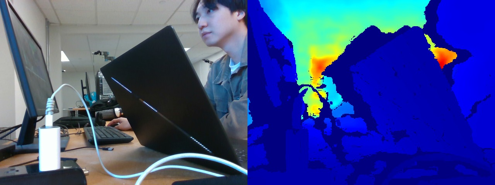
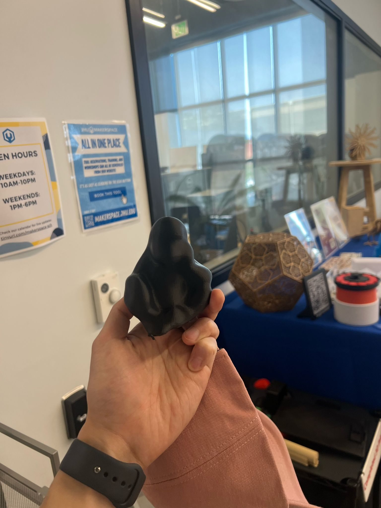
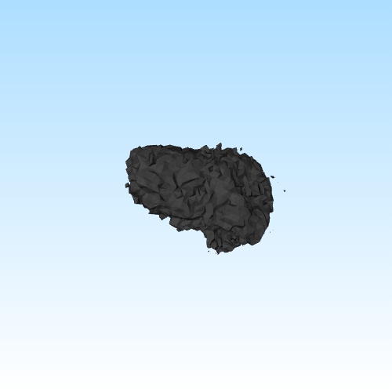
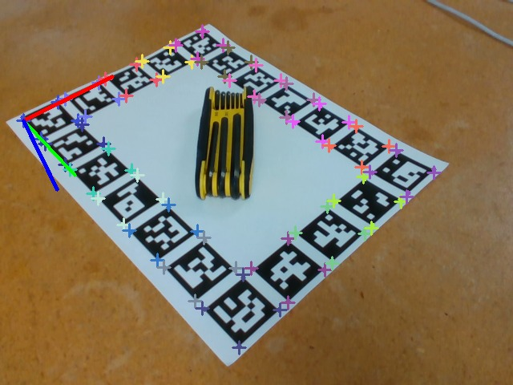
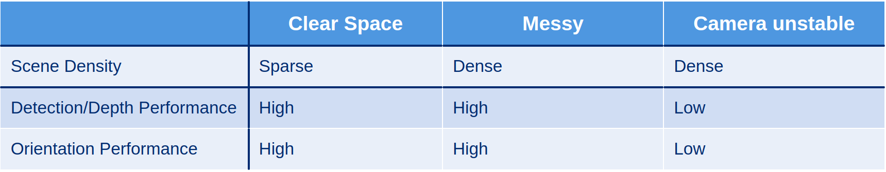

This project presents a real-time 6D pose estimation system built on the FoundationPose model, which leverages vision-language features to generalize to unseen objects. We calibrated an Intel RealSense RGB-D camera using a custom ArUco gridboard, generated object masks with the Segment Anything Model (SAM), and validated the system using a 3D-printed LINEMOD “Gorilla” object. The pose estimation pipeline demonstrated accurate and stable tracking of the object’s position and orientation across both static and dynamic environments. Our work highlights the effectiveness of FoundationPose in real-time pose estimation using RGB-D inputs and physical objects, showcasing its potential for robust vision-based applications.
Our project focuses on implementing a real-time 6d pose estimation pipeline using FoundationPose. We used ArUco gridboard for RGB-D camera calibration and built the model with a 3d printed LINEMOD gorilla. We then test the pose estimation across both static and dynamic environments and evaluate the robustness.
We implemented a 6D pose estimation pipeline using NVIDIA’s FoundationPose model, which predicts object orientation and position directly from RGB-D inputs without object-specific fine-tuning. To enable accurate pose tracking, we first calibrated an Intel RealSense RGB-D camera using a custom ArUco gridboard and recovered both intrinsic and extrinsic parameters. Object masks were generated from RGB frames using the Segment Anything Model (SAM), and paired with aligned depth maps and a 3D object mesh to guide the pose estimation. A 3D-printed LINEMOD “Gorilla” object served as the physical target, enabling live testing and real-time visualization of the estimated 6D pose.





We validated our real-time 6D pose estimation pipeline using the FoundationPose model on both synthetic and real-world data. Initial testing on the LINEMOD dataset produced accurate pose predictions, which encouraged us to move to physical trials. Using a 3D-printed “Gorilla” object and parsed video frames, we demonstrated accurate real-time tracking of object orientation and translation, particularly under static camera conditions.
The model performed robustly across clean and cluttered backgrounds and could handle object motion and rotation effectively. However, challenges arose when both the object and camera moved, leading to drift and degraded pose accuracy. Although integration with a robot arm was not included, the system proved reliable for visual pose estimation and laid a strong foundation for future extensions in robotic manipulation.